Drezno
Jakie to miasto?
Drezno jest historycznym miastem w Niemczech, leżącym nad brzegiem rzeki Laby, w kraju zwiazkowym Saksonia. To fascynujace miasto ma bogata historie, piekna architekture i wiele atrakcji turystycznych. Jednym z najbardziej charakterystycznych zabytkow w Dreźnie jest Zwinger, barokowy pałac z ogrodem, który go otacza. To miejsce, ktore koniecznie trzeba odwiedzic. Innym znanym zabytkiem jest Semperoper, opera drezdenska, która jest jednym z najwazniejszych teatrów operowych w Europie.
Drezno jest rowniez znane ze swojej pieknej starówki, zwanej Altstadt. Znajduje sie tam wiele zabytkowych budynków, w tym słynny Kościół Marii Panny w Dreźnie (Frauenkirche), który jest symbolem miasta. Poza tym warto zobaczyć Zamek Drezdenski (Residenzschloss) oraz katedre św. Trójcy (Hofkirche). Miasto ma równiez wiele muzeow, takich jak Muzeum Historii Drezna (Dresdner Stadtmuseum) i Galeria Obrazów Starych Mistrzow (Gemäldegalerie Alte Meister), gdzie mozna podziwiac wybitne dzieta sztuki. Drezno jest równiez znane ze swojego corocznego festiwalu Striezelmarkt, który jest jednym z najstarszych i najwiekszych świątecznych jarmarków w Niemczech
Drezno miasto we wschodnich Niemczech, na Pogórzu Zachodniosudeckim, położone nad Łabą, stolica kraju związkowego Saksonia. Aglomeracja drezdeńska liczy ok. 1,036 mln mieszkańców (2004).
Analiza śladów archeologicznych wskazuje na to, że zasiedlenie obszaru, na którym powstało miasto, nastąpiło już w epoce kamienia. W dokumentach zachowanych z 1206 nadmieniono po raz pierwszy istnienie Drezna, które następnie awansowało do rangi miasta-rezydencji Elektorów Rzeszy, króla Polski, a następnie króla Saksonii.
Drezno pełni rolę gospodarczego i kulturalnego centrum Saksonii. Stanowi duży węzeł komunikacyjny (lotnisko międzynarodowe), z ośrodkami przemysłu maszynowego, produkcji klisz fotograficznych, przemysłu chemicznego i farmaceutycznego.
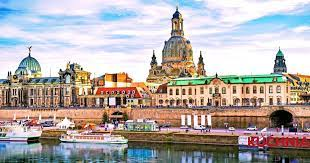Nazwa
Nazwa miejscowości wywodzi się od osady założonej w tym miejscu przez Słowian połabskich o nazwie Drezdno, stąd używa się odmiany w formie przymiotnikowej „drezdeński”. Według językoznawców bezpośrednio pochodzi ona od słowiańskiego słowa „drezga” (pol. „drzazga”). oznacza osadę ludzi mieszkających w lesie bądź „leśnych ludzi”.
Niemiecka nazwa Dresden jest zgermanizowaną górnołużycką nazwą miejscowości Drježdźany (pol. Drężdżany). Podaje się również inne znaczenie, wywodząc nazwę od starołużyckiego Drežďany, oznaczającego „mieszkańców mokradeł”.
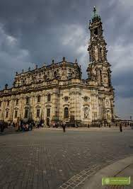Historia
Już we wczesnej epoce kamienia powstały w okolicach dzisiejszego Drezna pierwsze osady. Wybudowany w V w. p.n.e. rondel Drezno-Nickern jest przykładem pierwszych monumentalnych budowli na tym obszarze. We wczesnym średniowieczu powstał bród prowadzący przez Łabę na wysokości dzisiejszego Starego Miasta.
Jednak słowiańska osada, mimo korzystnego położenia nad Łabą i żyznych ziem, nie mogła się rozwijać z powodu otaczającego ją gęstego lasu. Osiedle należało w tym czasie do Marchii Miśnieńskiej, która w przybliżeniu obejmowała w latach 986 do 1423 obszar dzisiejszej Saksonii (bez Milska). W 1002 obszar dzisiejszego Drezna wraz z Miśnią był we władaniu Bolesława Chrobrego.
Pierwsza udokumentowana wzmianka o Dreźnie znalazła się w piśmie „Acta sunt hec Dresdene” z 1206 roku. Użyte w dokumencie określenie „Dresdene” pochodzi przypuszczalnie od starołużyckiego słowa Drežďany (mieszkańcy bagien), którym wcześniej nazywano mieszkańców słowiańskiej, rybacko-rolniczej osady, ulokowanej na prawym brzegu Łaby, w najszerszym miejscu kotliny drezdeńskiej.
Na lewym brzegu powstał z kolei gród, strzegący brodu na Łabie, którym przekraczał rzekę ruchliwy trakt handlowy, biegnący przedgórzami Rudaw na Śląsk. W dokumencie „Acta sunt hec in civitate nostra Dresdene” z 21 stycznia 1216 określa się już Drezno jako miasto. Po śmierci margrabiego Henryka III Dostojnego w 1288 roku Drezno przeszło we władanie Czech, a następnie w 1316 Marchii Brandenburskiej, by powrócić w granice Marchii Miśnieńskiej w 1319 roku. Do dzisiaj nie odnaleziono dokumentu przyznania praw miejskich, jednak od 1350 roku nazywa się już samodzielną osadę na prawym brzegu Łaby Starym Dreznem „Antiqua Dressin”, a w 1403 roku landgraf Wilhelm I uznał tę osadę oficjalnie za miasto.
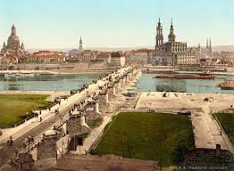Zabytki miasta
- Stare miasto w Dreźnie
- Pałac Zwinger
- Kościół Marii Panny
- Muzeum Józefa Ignacego Kraszewskiego
- Most Augusta
- Galeria Obrazów Starych Mistrzów
Stare miasto to właściwie centrum Drezna, w którego obrębie ulokowane są najważniejsze zabytki
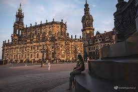Pałac Zwinger, znajdujący się w samym centrum miasta, jest nazywany przez przewodników perłą baroku. Został wybudowany na polecenie Augusta II Mocnego i architektonicznie nawiązuje do stylu rokoko, popularnego pod koniec epoki barokowej.
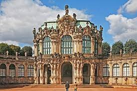odnowiony w 2005 roku najważniejszy kościół protestancki. zabytek,zawdzięcza się inwencji Augusta II Mocnego, wybudowany również w stylu barokowym
Stolicę Saksonii odwiedzało wielu polskich artystów, pisarzy i poetów. Niektórzy z nich nawet osiedlili się na stałe i wybudowali swoje rezydencje. Jednym z nich był Józef Ignacy Kraszewski. W jego ówczesnym domu znajduje się teraz muzeum poświęcone życiu i twórczości polskiego pisarza.
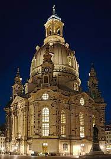Most powstał dopiero z początkiem XX wieku, chociaż pierwsza wersja została wybudowana w XVIII wieku na polecenie Augusta Mocnego. Współcześnie most został tak nazwany na cześć ostatniego króla Saksonii Fryderyka Augusta III.
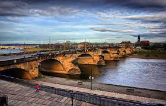Galeria, która znajduje się w pałacu barokowym pałacu Zwinger to jedna z najchętniej odwiedzanych galerii w całych Niemczech. Kolekcjonowanie dzieł rozpoczął już książę August Wettyn, a jego poczynania dokończyli polscy władcy August II i August III Sas. To właśnie za ich sprawą udało się sprowadzić do Drezna najokazalsze dzieła sztuki, m.in. „Madonnę Sykstyńską” Rafaela
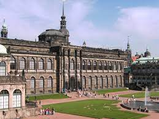Sławni ludzie z państwa
- August II Mocny
- August III
- Aleksander Bronikowski
- Alojzy Bruhl
- Fryderyk August
w latach 1697 do 1706 i 1709 do 1733 elekcyjny król Polski; pierwszy król Polski z saskiej dynastii Wettynów. Jego przydomek jest zazwyczaj wiązany z jego nieprzeciętną siłą, dzięki której potrafił podobno zginać podkowy gołymi rękoma.
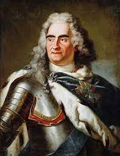w latach 1733 do 1763 król Polski oraz jako Fryderyk August II elektor saski; syn Augusta II z saskiej dynastii Wettynów i Krystyny Eberhardyny Bayreuckiej.
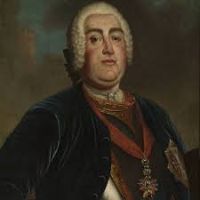to pisarz, autor powieści historycznych, major Wojska Polskiego Królestwa Kongresowego.
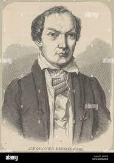starosta warszawski, generał artylerii. Urodził się 21 czerwca w Dreźnie, jako najstarszy syn Henryka Brühla (ministra Augusta III) oraz Marii Anny z domu Kolowrath.
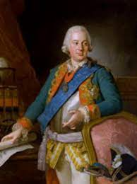Najstarszy syn księcia elektora Fryderyka Krystiana (1722 do 1763) i księżniczki bawarskiej Marii Antoniny z dynastii Wittelsbachów (1724 do 1780), który dożył wieku dorosłego. Wnuk króla polskiego i wielkiego księcia litewskiego Augusta III Sasa oraz prawnuk króla polskiego i wielkiego księcia litewskiego Augusta II Mocnego
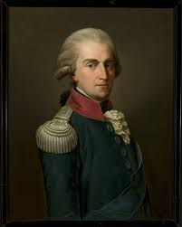